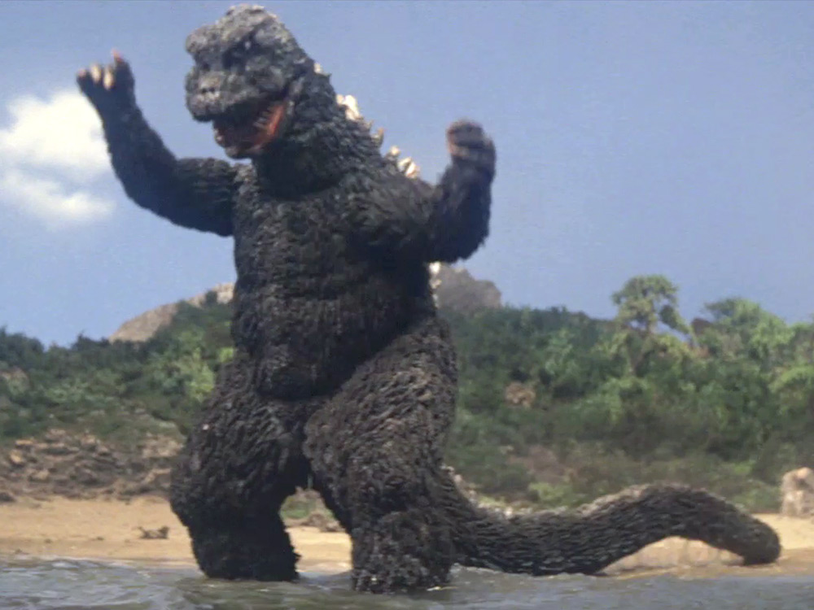

ยุคโชวะ (Showa Era: 1954-1975)
เริ่มต้น : ปี 1954 ด้วย Godzilla หรือ Gojira ซึ่งเป็นภาพยนตร์ต้นฉบับที่เล่าถึงสัตว์ประหลาดขนาดยักษ์ที่ถูกสร้างขึ้นจากผลของการทดลองนิวเคลียร์
ธีมหลัก : ในยุคโชวะ Godzilla เป็นตัวแทนของการทำลายล้างที่เกิดจากมนุษย์ โดยเฉพาะประเด็นที่เกี่ยวกับพลังงานนิวเคลียร์ และผลกระทบของสงครามโลกครั้งที่ 2 ที่ญี่ปุ่นเผชิญมา
โทนเรื่องราว : ช่วงต้นของยุคนี้เน้นความเป็นหนังแนวภัยพิบัติจริงจัง ก่อนจะพัฒนาไปสู่การเป็นหนังแนวสัตว์ประหลาดต่อสู้กัน ที่มีความบันเทิงและมีความเบาสบายมากขึ้น เช่น Godzilla vs. King Ghidorah และ Godzilla vs. Mechagodzilla
จุดสิ้นสุด : ภาพยนตร์สุดท้ายในยุคนี้คือ Terror of Mechagodzilla (1975)
